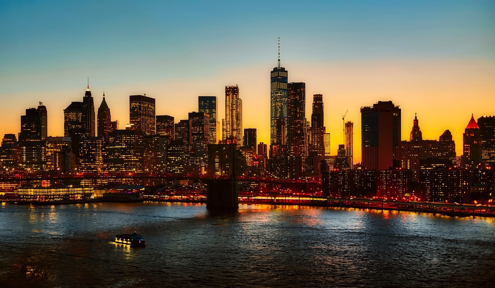

Informações
Descubra dados fascinantes e curiosidades sobre a cidade que nunca dorme
Explore Nova Iorque

Vista icónica do skyline
Dados da Cidade
| Categoria | Valor |
|---|---|
| População | 8,5 milhões |
| Área Total | 783 km² |
| Fundação | 1624 |
| Distritos | 5 (boroughs) |
| Idiomas | Mais de 800 |
Curiosidades Fascinantes
- Nova Iorque tem mais de 800 idiomas falados diariamente, tornando-a a cidade mais linguisticamente diversa do mundo
- A Estátua da Liberdade foi um presente da França em 1886 e é símbolo de liberdade e democracia
- O Central Park é maior do que o principado do Mónaco, com 341 hectares de área verde
- Times Square recebe mais de 50 milhões de visitantes por ano
- Nova Iorque foi capital dos Estados Unidos entre 1785 e 1790

50M+
Visitantes anuais fazem de Nova Iorque um dos destinos turísticos mais populares do mundo

Capital Cultural
Casa de mais de 500 galerias de arte, 200 museus, e inúmeros teatros da Broadway, Nova Iorque é considerada a capital cultural do mundo.